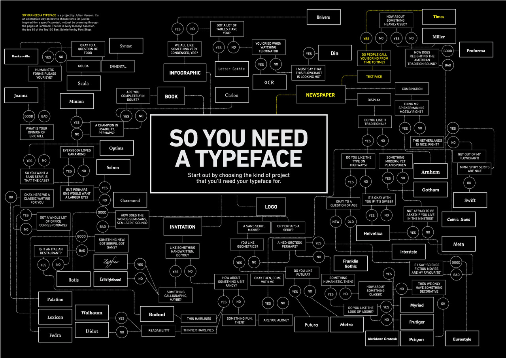
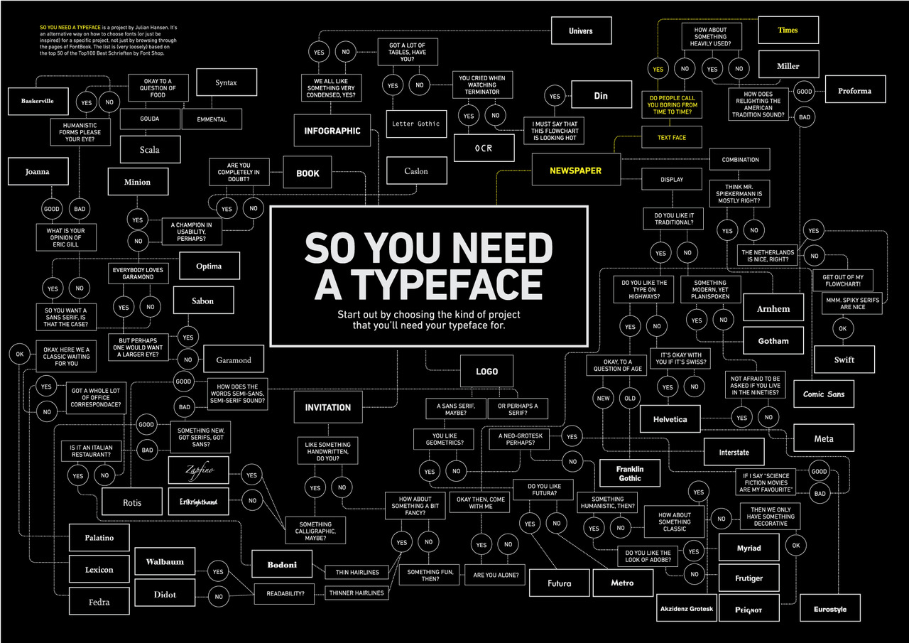

So You Need A Typeface
Graphic design student Julian Hansen created this flowchart for picking the perfect typeface in any situation.

Graphic design student Julian Hansen created this flowchart for picking the perfect typeface in any situation.